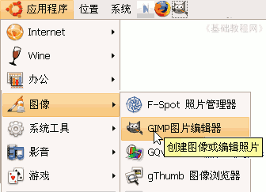
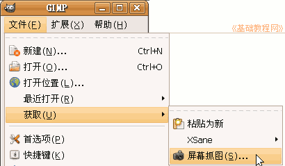
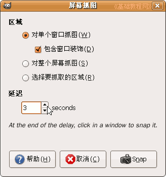
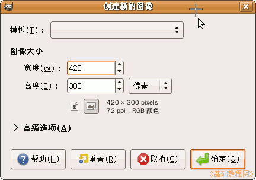
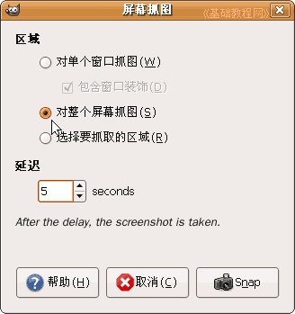
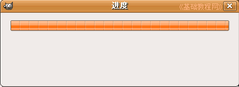

GIMP操作基础教程
作者：Teliute 来源：基础教程网
八、抓图方法 返回目录
在GIMP软件中，带有一个抓图的功能，我们可以用它进行抓图操作，下面我们来看一个练习；
1、启动GIMP
1）点上面板栏的菜单“应用程序－图像－GIMP图片编辑器”，就可以启动GIMP程序；

2）程序启动完成后，出来两个长条面板，如果还有一个“日积月累”面板，可以去掉下面的勾，点“关闭”；

2、捕捉窗口
1）点菜单“文件－新建..”，出来一个新建窗口，放在这儿不动它；
2）再点菜单“文件－获取－屏幕抓图..”，选择抓图命令，另外上面的粘贴为新，可以从剪贴板新建一个图像；

3）在抓图对话框中，把延迟时间设为3秒，然后点下面的“捕捉(Snap)”按钮；

4）把鼠标移到刚才的新建窗口里，稍等一会鼠标变成十字形，在标题栏上点左键抓图；

5）抓图成功后，自动打开一个新窗口，里面就是所抓图的内容，
以“窗口”为文件名，保存文件到自己的文件夹，然后关闭它；
3、抓取桌面
1）点菜单“文件－获取－屏幕抓图..”，在出来的抓图对话框中，选择第二个选项，
把下面的延迟时间设为5秒钟，这次我们来抓取整个屏幕；

2）点击右下角的“捕捉(Snap)”按钮，准备开始捕捉，
最小化所有窗口，稍等一会儿，出来一个抓图进度条，然后自动打开一个窗口，抓图成功；
3）以“桌面”为文件名保存文件到自己的文件夹；
本教程由86团学校TeliuTe制作|著作权所有，商业用途请与作者联系
基础教程网：http://www.laxjyj.com/teliute/
美丽的校园……
转载和引用本站内容，请保留版权信息和本站链接。